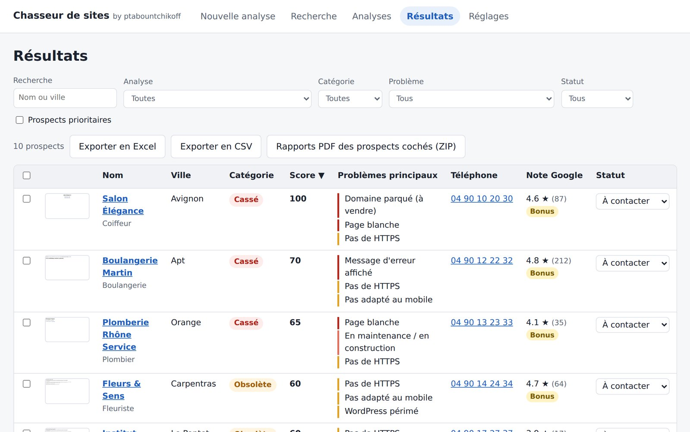
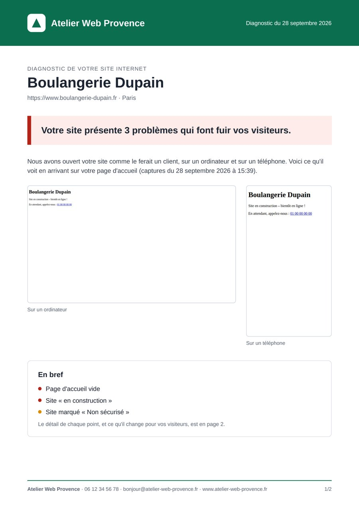

Trouvez les entreprises
Tapez un métier et des villes (« coiffeur », « Avignon, Apt ») : la liste vient de Google Maps. Ou importez votre propre fichier CSV ou Excel.
Chasseur de sites analyse les sites des entreprises de votre région, repère ceux qui sont en panne, expirés ou dépassés, et vous prépare le rapport et le message pour les contacter.

Une entreprise dont le site est en panne perd des clients tous les jours. Elle a une bonne raison de vous répondre.
Tapez un métier et des villes (« coiffeur », « Avignon, Apt ») : la liste vient de Google Maps. Ou importez votre propre fichier CSV ou Excel.
Chaque site est ouvert comme le ferait un visiteur, sur ordinateur et sur téléphone, avec captures d'écran. 10 sites à la fois, en pause quand vous voulez.
Les sites les plus mal en point en premier. Un clic : rapport PDF à vos couleurs, e-mail, script d'appel et SMS déjà rédigés.
Nom de domaine expiré ou à vendre, erreur serveur, page blanche, certificat de sécurité expiré, site piraté, « en construction » depuis des années.
Pas adapté au téléphone, « Non sécurisé », copyright de 2012, WordPress périmé, lent sur mobile, invisible sur Google… Chaque point compte dans le score.
Ce que voit le client, sur ordinateur et sur téléphone. Rien de plus parlant pour un commerçant que la photo de son propre site en panne.
E-mail, script d'appel et SMS rédigés pour chaque entreprise, avec ses problèmes expliqués sans jargon. Vous relisez, vous copiez, c'est tout.
Un site en panne + plus de 20 avis Google bien notés = une entreprise qui a des clients et un budget. Un filtre les met en tête de liste.
Relancez une analyse chaque semaine et voyez quels sites sont devenus cassés depuis la dernière fois : le bon moment pour appeler.
Deux pages claires, à votre nom et à vos couleurs, que le commerçant comprend sans être informaticien.

Les deux logiciels se complètent pour ne rater aucune entreprise de votre secteur.
Il trouve celles qui n'ont pas de site du tout, ou seulement une page Facebook. Vous leur proposez un site.
Il trouve celles dont le site est en panne ou vieillissant. Vous leur proposez une refonte, avec la preuve sous les yeux.
Une seule refonte signée rembourse largement le logiciel.
Pour 2 ordinateurs, Windows ou Mac. TVA non applicable, art. 293 B du CGI.
La recherche par métier et par ville utilise une clé Google Maps personnelle : Google offre un quota gratuit chaque mois, au-delà les recherches sont facturées par Google. L'analyse de vos propres fichiers ne nécessite aucune clé.
Non. Vous téléchargez le fichier, vous double-cliquez, et l'application s'ouvre dans votre navigateur. Tout se fait avec la souris, en français.
Seulement pour la recherche « métier + ville ». Vous pouvez aussi importer vos propres listes (CSV ou Excel, avec au moins le nom et l'adresse du site) : dans ce cas, aucune clé n'est nécessaire.
Google offre un quota gratuit chaque mois. Avant chaque recherche, Chasseur de sites affiche le nombre maximal de requêtes et une estimation du coût, pour que vous ne soyez jamais surpris.
Chaque site est testé deux fois avant d'être déclaré en panne, puis ouvert dans un vrai navigateur. Chaque problème est accompagné de sa preuve (message d'erreur, date d'expiration, capture). Si l'analyse n'a pas pu voir un site, il est marqué « À revérifier », jamais classé à tort.
Oui. Chasseur de sites fonctionne sur Windows 10 / 11 et sur Mac, avec une version pour les Mac à puce Apple (M1 à M4) et une pour les Mac Intel.
Oui, pour les logiciels récents qu'ils ne connaissent pas encore. Sur Windows, cliquez sur « Informations complémentaires » puis « Exécuter quand même ». Sur Mac, ouvrez Réglages Système → Confidentialité et sécurité et cliquez sur « Ouvrir quand même ». Vous ne le ferez qu'une fois.
Sur votre ordinateur, et nulle part ailleurs. Vos prospects, vos notes et vos clés ne sont envoyés à aucun serveur ; les clés sont chiffrées. Seule votre clé de licence est vérifiée en ligne, une fois par jour.
Juste après le paiement, votre clé de licence s'affiche sur la page de remerciement ; elle est valable sur 2 ordinateurs. Vous la collez au premier lancement, c'est tout. Elle est revérifiée en ligne une fois par jour ; sans Internet, le logiciel reste utilisable 14 jours. Pour changer d'ordinateur, libérez la licence en un clic. En cas de remboursement, la licence est désactivée.
La prospection auprès des professionnels est autorisée en France, à condition que votre offre soit en rapport avec leur activité et que vous leur permettiez de refuser d'être recontactés. Chasseur de sites vous aide : liste d'opposition intégrée, suppression d'un prospect en un clic, effacement automatique des prospects jamais contactés après 12 mois. En cas de doute, renseignez-vous auprès de la CNIL.
Lancez votre première analyse et découvrez les entreprises de votre ville dont le site ne tient plus debout.
Obtenir Chasseur de sites →